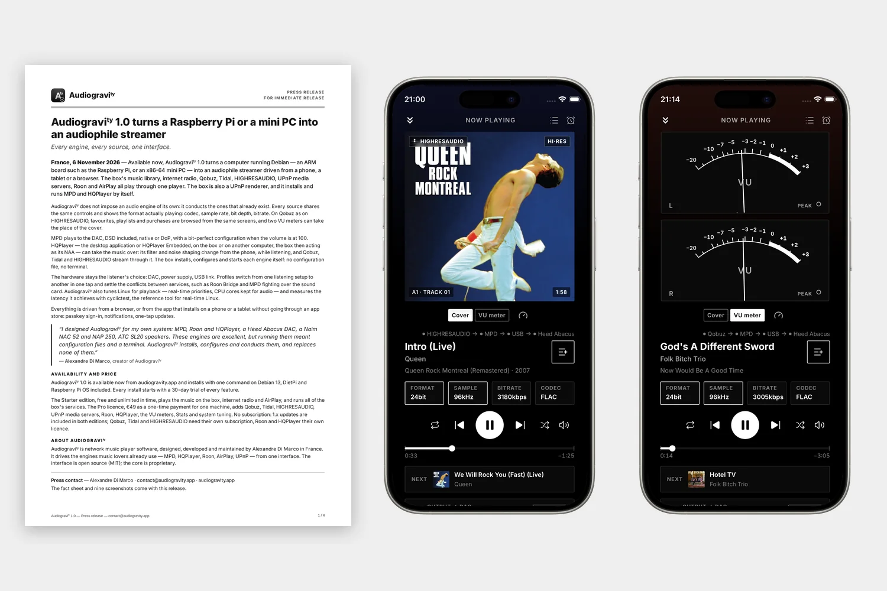
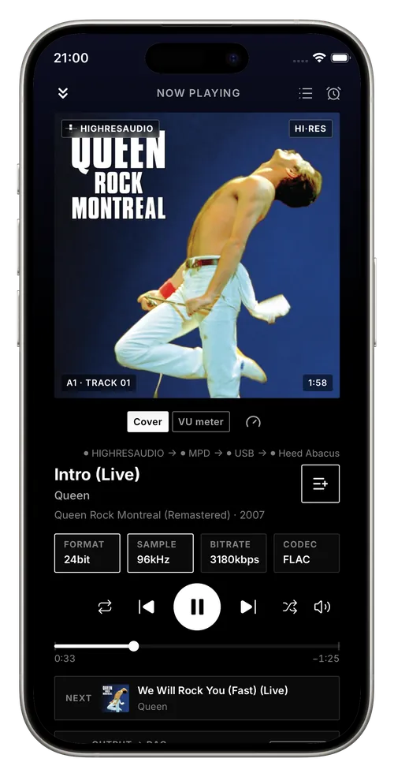
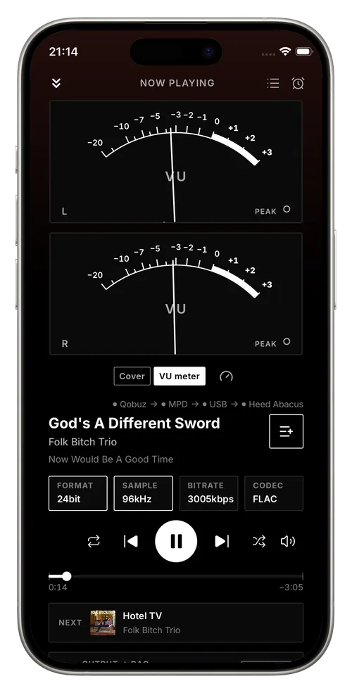
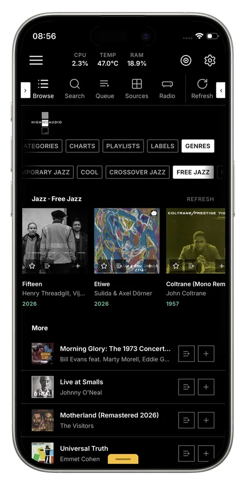
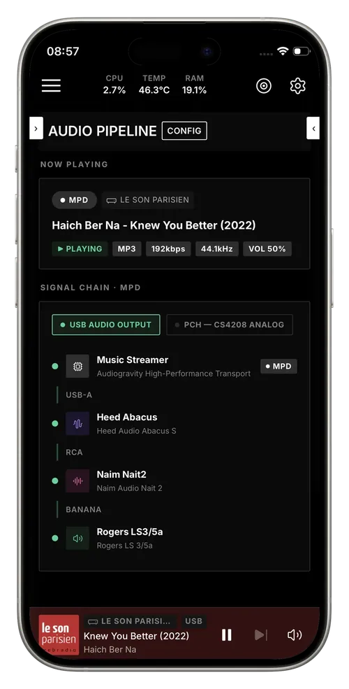
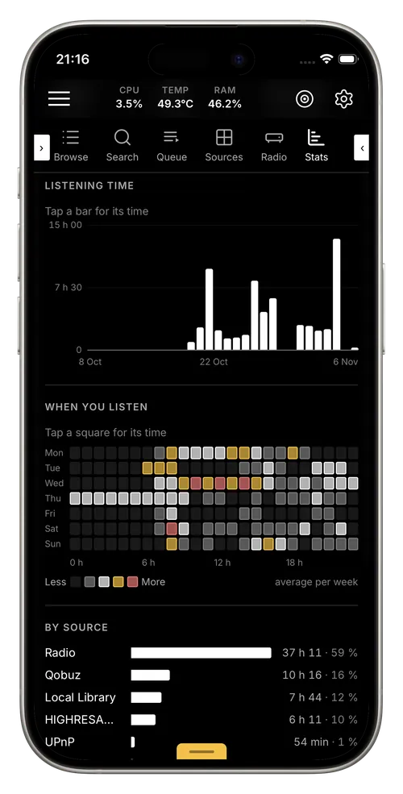
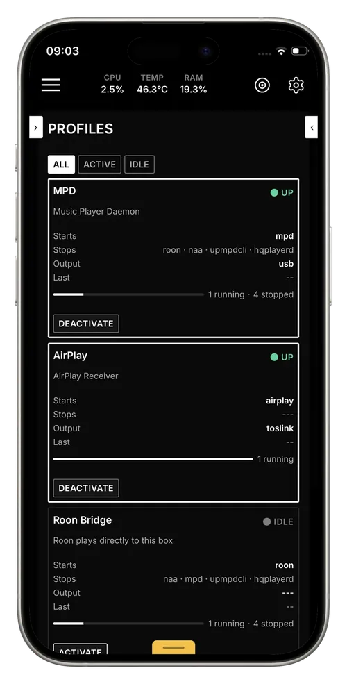
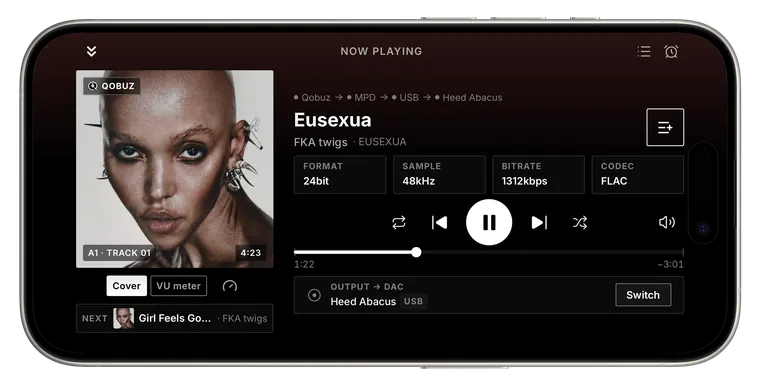
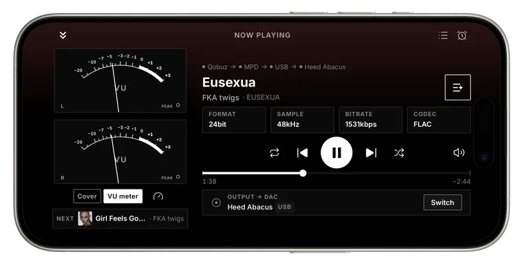
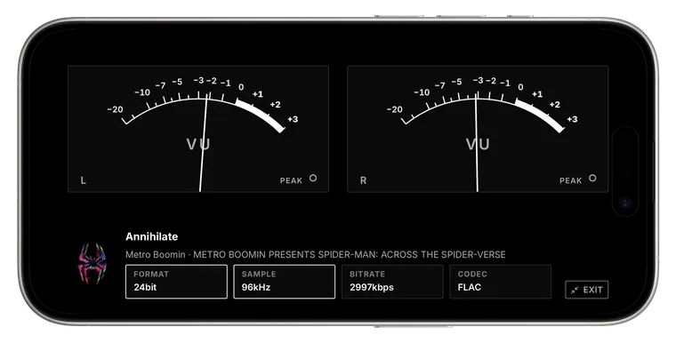

Audiogravity 1.0: the press release
Audiogravity 1.0 came out on 6 November 2026. Its press release is here, in English and in French, for anyone who writes about hi-fi and streaming: a page on what it does, a fact sheet, and nine screenshots of the app.


Download
- The press release, in English — PDF, 4 pages, 1.2 MB.
- Le communiqué de presse, en français — PDF, 4 pages, 1.2 MB.
- The nine screenshots, full size — a ZIP of PNG files, 6.2 MB.
What it says
Audiogravity turns a computer running Debian — a Raspberry Pi, another ARM board or an x86-64 mini PC — into an audiophile streamer driven from a phone, a tablet or a browser. The box's music library, internet radio, Qobuz, Tidal, HIGHRESAUDIO, UPnP media servers, Roon and AirPlay play through one player, which shows the format actually playing.
It brings no audio engine of its own: it installs and drives MPD and HQPlayer, and leaves the DAC, the power supply and the rest of the hardware to the listener. The fact sheet goes through it area by area — the sources, the three UPnP roles, the engines, the player, setup and tuning — and says what each edition includes.
The screenshots
Nine screens of the app, in its dark theme, with the captions the press release gives them. Each one opens full size; the ZIP above holds them as PNG files, numbered in the same order.


















Contact
For a question, a detail to check or a screen that is not in the set, write to me at contact@audiogravity.app.